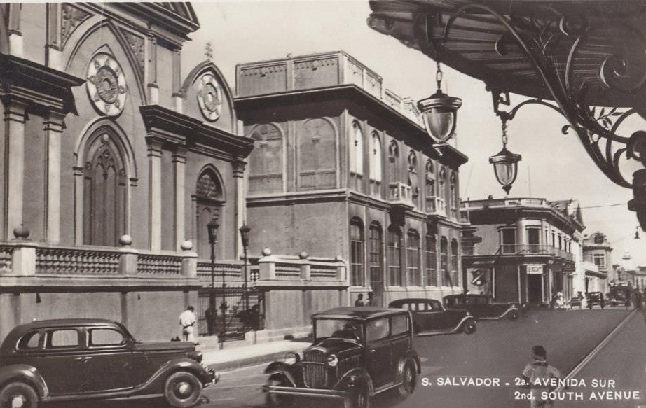

HISTORIA
La civilización de El Salvador data de la época precolombina, alrededor de 1500 años A.C., según lo evidencia las ruinas de Tazumal y Chalchuapa. Los primeros habitantes fueron los Pocomames, Lencas, y Pipiles, que se asentaron en las zonas centrales y occidentales del país a mediados del Siglo XI.
En junio de 1524 el Capitán Español Pedro de Alvarado empezó una guerra de conquista contra Cuzcatlán (tierra de cosas preciosas) que estaba poblada por las tribus nativas del país. Después de 17 días de sangrientas batallas muchos nativos y españoles murieron, incluyendo al jefe indígena Atlacatl. Pedro de Alvarado derrotado y herido en su cadera izquierda, abandonó la pelea y se retiró a Guatemala, comisionando a su hermano, Gonzalo de Alvarado, a continuar con la conquista de Cuzcatlán. Posteriormente, su primo Diego de Alvarado estableció la villa de San Salvador en abril de 1525, en un sitio llamado La Bermuda, cercano a la ciudad de Suchitoto. En 1546, Carlos I de España le otorgó a San Salvador el título de ciudad.
Durante los años siguientes, el país evolucionó bajo dominio español. Hacia fines del año 1810 surgió un sentimiento de libertad entre los pueblos de Centroamérica y el momento de romper las cadenas de esclavitud llegó en la madrugada del 5 de noviembre de 1811, cuando el Sacerdote José Matías Delgado, replicó las campanas de la Iglesia La Merced en San Salvador, haciendo un llamado a la insurrección. Después de muchas luchas internas, se firmó el Acta de Independencia de Centroamérica en Guatemala, el 15 de septiembre de 1821. Este día conmemoramos el Día de la Independencia de nuestra tierra Cuzcatleca.